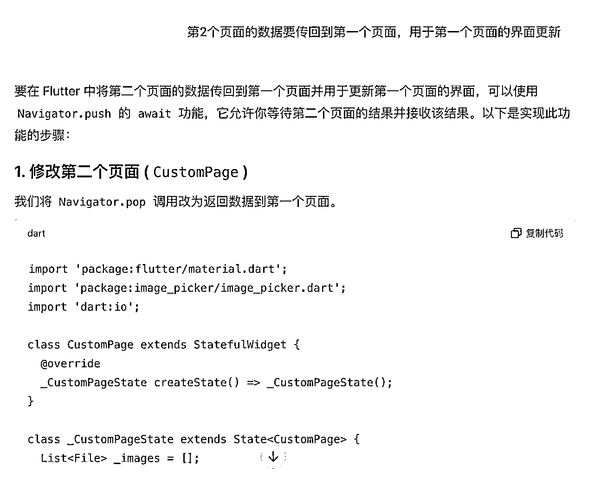
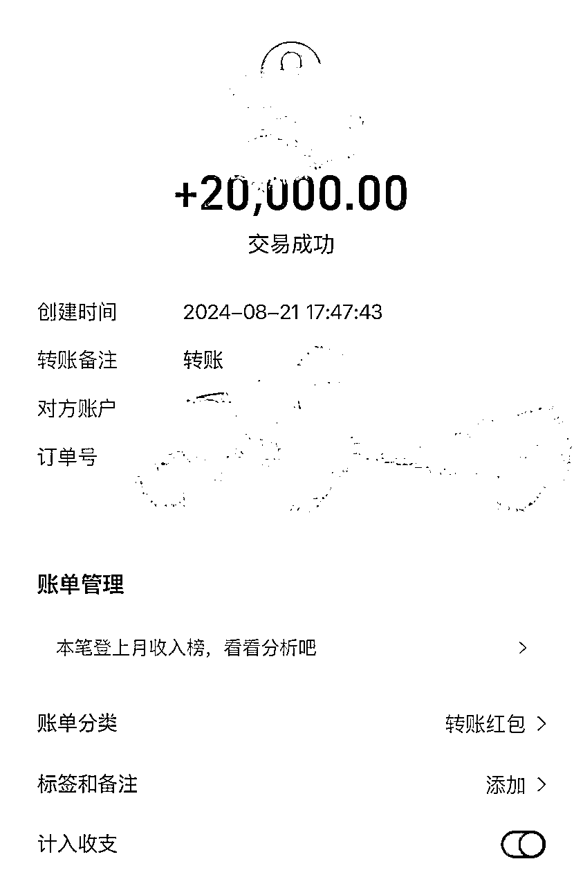

来源：https://wandouyin.feishu.cn/docx/OOeDdoPspoqdnuxKXLxcflQ0nWe
大家好，我是刘笑长。
本文故事发生在2024年7月份，当时Cursor还未像今天一样普及和火爆。一次因缘巧合的机会，我接受了一个朋友公司的紧急需求，后来用了7天时间，使用Chatgpt开发了一个Android App并获得1W+收入的故事。
通过本文，你将看到完整的一人产设研测流程以及如何借助AI（ChatGPT）来实现可商用APP的过程，期望本文能够对想在AI编程技术领域进阶的圈友或者未来想把AI编程当副业的圈友有所启发和帮助。
先通过下方36秒的短视频，看下借助ChatGPT开发出来的最终的产品形态（为保护客户业务隐私，部分功能和信息进行了脱敏），以及接到需求->需求确认->报价->确定合作->交付PRD->交付功能Demo ->收到1W的完整流程。
接下来，进入正文：
2024年7月7日，这个客户是通过一个朋友的转介绍找到我的，客户想在微信App的核心功能&交互的功能之上，增加一些特殊功能；他们公司内部称之为“AI私域模拟器”项目，并且期望尽快投入使用，在市面上也找过了很多外包公司沟通，或许都达不到预期效果。于是找到了我的朋友，我朋友没时间，就随口微信问我了一句：“有没有兴趣搞一个微信Pro版？”，在我了解了客户的公司主营业务为广告投放后，就欣然答应了。
人类，因为好奇心而进步。于是这活，我接了。
我去万能的淘宝搜了下，如下图所示:
注意第一张截图的图片右下角的图标：“广告”。凭我对“广告”的理解，以及结合右图的定价，判断这事还挺暴力！
这是典型的订阅付费模式哈，在这样的定价逻辑下，单用户获客成本小于3元，就可以疯狂投放广告买量来规模盈利哈～
按照一个月18元，假设一个月内通过自然流获取到100个用户，就是18*100个，就是1800元，工具App生意的魅力再于是还可以有复购的收入哈；甚至你换个皮，做点差异化的功能，还可以矩阵化店铺哈。
客户的需求往往是抽象的，你要像产品经理一样，梳理出产品的核心功能逻辑以及UI交互。根据微信的沟通，有几个清晰的点
于是，接下来的任务，并不是马上进入coding阶段，而是技术选型来满足用户的短中长期需求，编写产品需求文档PRD来跟客户确认功能和交互。
考虑开发完安卓，还有概率需要开发iOS版本，本着一次开发，多处运行的原则，以及与ChatGPT沟通，可以跨平台（Android、iOS）的有React Native 和 Flutter 。
进一步比较了2者的差异化后，为了更好的UI展现以及交互体验，最终选择了Flutter。
Flutter还支持生成网站，所以如果一项业务，既要有网站端，又要有Android、iOS端的话，首选Flutter。
通过需求梳理、流程梳理，来理清产品页面内部承载的功能以及页面之间的关系，在整体上有一个大概的认识，对于准确评估工作量有很大的帮助。
把需求落实成文档，减少双方的需求认知GAP，减少后期的沟通摩擦。
在书写产品需求文档时，其实已经在准备提示词了，之前产品需求文档是给研发看的，现在是给大模型的。
任何语言，搭建开发环境都是最难的。遇到问题时可以直接问ChatGPT
直接提供需要复刻的图片，然后给提示词：“参照图片，xxxxx”，ChatGPT就会生成参照图片布局的UI代码
当一个页面功能太多或者代码数量太多，就需要重新创建一个页面或者一个类。这两个页面或类中就需要数据传递，来保证数据的一致性。

遇到调试错误，直接复制错误或者对错误截图
flutter build apk --release
Github、Gitlab、Coding
当代码数据巨大时，一定要使用代码管理工具，及时保存与上传，因为大模型生成的结果，有时候会比上一次更差一些。
可以提取UI页面中的颜色值
可以提取UI页面中的间距、边距
2张UI截图重叠，图层上方的降低透明度，可以检测页面复刻的程度。
从7月8号确定合作需求，7月11日交付产品需求文档（功能逻辑+页面流程交互+排期），7月15日交付核心功能Demo， 使用ChatGPT编程大概用了4天时间，AI编程大大加速了开发效率。
在产品交付正式使用1个月后，功能、交互、细节完全没有问题后，客户又支付了2W。通过客户对产品的使用，用支付真金白银的方式让我知道了AI编程已经入了可商用的阶段。

近期我还试用了Cursor、Windsurd，这些AI编程工具又进一步提升了研发调试效率，不需要来回复制、粘贴，还支持快速复制调试报错信息，比ChatGPT效率又提升了。同一款可商用的App，ChatGPT需要2.5+天，那么Cursor可以降至1天。
曾经看过一部电影，叫《无双》，讲述了一个画家如何画美元的故事。每当去做一件有挑战的事，我就会想到这部电影。通过这件事，我认识到AI编程已经到了一个“奇点时刻”，通过AI编写的程序已经达到可商用的阶段。
关于App选品、精细化运营、利润最大化等，可参见我的另一篇帖子（点击下方蓝色文字链接🔗）：
从选品策划、变现、数据分析、App矩阵多方面，分享App蓝海精细化运营玩法-知识星球
大家在技术选型、复刻某款App、App上线或变现遇到卡点或困惑时，欢迎评论区一起沟通交流。
这是一个最好的时代！感谢生财有术！一起生财有术！